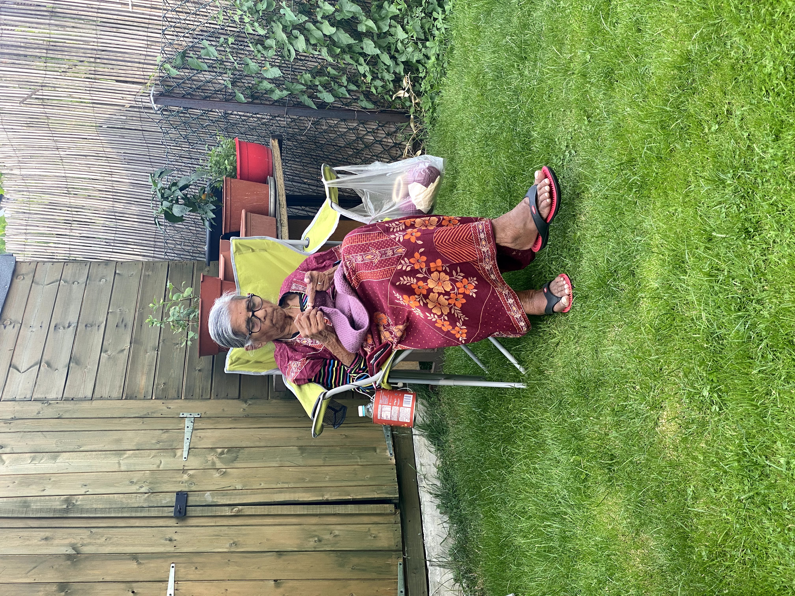
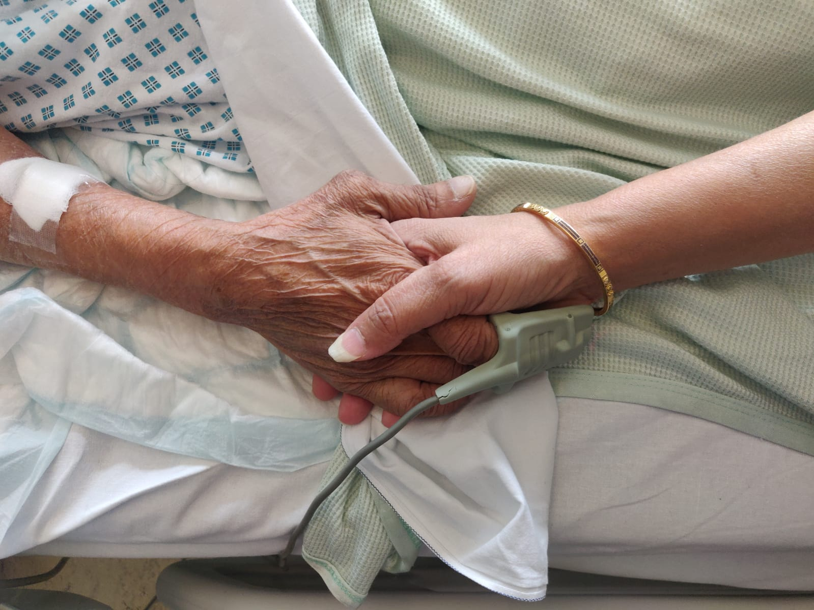

Kakubhen
1937 - 2021
Bhajan Recordings
Speeches & Poems
Our Nani
by Payall
Our Nani left us at the age of 84 despite always giving us the reassurance that she would be well and kicking for many many years to come. First time Nani, you didn't keep your word.
Nani was the most amazing person I've ever met. I tell her story from her grandchildren's perspective in the hope that her memory lives on.
Nani was born on 8th February 1937 in Ahmedabad, India. She was educated and even joined the NCC cadets. She had an arranged marriage with my Nana. She had two children, my Masi and Mumma; a very small family for that generation. Nana worked in textiles and got an opportunity to come to the UK which they did in 1965, to Manchester. Nani didn't like Manchester as it was always raining there although they stayed there for 4 years. They went back to India for two years. A further opportunity arose and I recall my Nani telling me that she told Nana she would only go back to the UK if they settled in London- a city she had never been to but heard so much about. My Nana and Nani left both sides of their families to settle in London permanently in 1971. They were the first and only of their siblings at the time to move abroad. No doubt that must have been extremely difficult for them all.
Nani has always been a very sociable person. She loved to talk and would always be the one to start conversations with people. Despite it only being the four of them in the UK out of the entire extended family, she said she never felt lonely. She made friends so easily.
Mumma and Masi grew up and got married. Nani knew my dad since he was seven years old. My parents did not have an arranged marriage; quite the opposite in fact but that's not a story for today. Nani and my dad had a very strong relationship despite occasional annoyance with each other. The way they interacted always made me quite proud. My dad has truly lost his 'retirement' companion as he calls it. He's not really retired though anyway!
Shruti was born 4 years later in 1992 and I was less than pleased that my Masi had this other baby to deal with when I thought I was her favourite! Then it was Partha's turn 6 months later and finally Avisha in 1995. And that made our family, Nani & Nana's 4 grandchildren. They were both so proud. Nani looked after us all at different stages of our lives. I remember a trip to Disneyland Paris when we all went but left Avisha at home with Nani (so mean I know!!)

My Nani was left without Nana but she remained strong and full of life.
Mumma and Masi took Nani with us all on many holidays, to Devon, Centre Parcs, Venice, Belgium, New York, Las Vegas, Dubai, to name a few. She loved exploring new things and places.


Nani was always very skilled at knitting, sewing and arts and crafts. She made lots of things over the years. Most recently she made a beautiful skirt for her great granddaughter Ishika and then made blankets for Avisha and Partha to use for their children in the future. She didn't get round to finishing the blankets for me and Shruti and even on her last day with us she remembered them and told us all to share them between us as and when required. 
Nani wasn't ready to go. She wanted to live for decades more and we all genuinely thought she was going to be one of those people who would live beyond 95. She wanted to see Partha and Avisha’s wedding; in fact she even wanted to see Ishika’s wedding but of course that was most unrealistic! Shruti and I were lucky to have her blessings at our weddings and I hope we can somehow fill the void at Avisha and Partha’s weddings in the future. The day before she passed away she sent a Whatsapp message to someone she knew to see if they could deliver a sari so she could give to Partha for his future wife as she had already given saris to the rest of us many times. We saw this WhatsApp message on her phone after she had passed. She thought of everything. She got to a good age but because of who she was, being so young at heart, I feel she was taken from us too soon and so quickly. She fought and fought to the last minute as she didn't want to go but she couldn't control the inevitable. Even in her last few hours she made a dinner request for farari shaak. She didn’t make it to dinner time.
Her last few days were surreal. She was in hospital for 7 days and the doctors said her lungs were failing and in reality there wasn’t much they could do. My Nani being the cool cookie she was and wanting to live, asked the doctor for a lung transplant and she wasn’t even joking apparently! She enjoyed the mac & cheese and vegetable biryani they gave her at the hospital and of course the vanilla ice cream and sent us all photos of her meals! We were very lucky that her two daughters, her two sons-in-law and her four grandchildren got to see her and spend a few hours with her on her last day; she was so alert and was able to talk to us albeit it was very difficult for her to do so. Finally, she said she would rest for a while and she slipped away peacefully in her sleep shortly after with her two amazing daughters holding her hands. No doubt they will miss her the most. 
Taken too soon but in the most peaceful way. We love and miss you so much Nani. I am honoured to have been your first grandchild and for my own daughter to have met you, her Big Nani. I know all you wanted to do in the past year was to hold her and play with her which you couldn’t do and for that I am so sorry.
Love you ❤️
Payall
Nani
By Shruti
Our beloved Nani, Udayana Kirtikumar Desai
On 21st April she bid us goodbye
The rock of our family, she kept us close
A proud grandmother who loved us the most
She was different from the rest
An IT guru and modernly dressed
She continued to learn even at the age of 84
Hours on Google, Pinterest, Facebook and many more apps for sure
Nani loved handicrafts both buying and making
She also loved to knit and enhance clothes with her braiding
Her skills were much more than computer and crafts
She was strong, powerful and full of laughs
Till her last breath she wanted to live on
Her independent nature, her love for life, with her, now gone
In her 80s but mentally 20
Fearless was Nani and generous to many
She would rock around London at night
Happily roaming with her walking stick without any fright
Pizza and coke was her favourite meal
Especially the corner shop ones who put extra chillies for free in her meal deal
From the pizza owner, her pharmacists and her library friends
All are going to miss her presence as she was so social with them all through weekdays and weekends
We love you Nani so much
We are going to miss your kisses and warm touch
But how proud we are with your decision
To donate your body for medical students is such a forward thinking vision
Your legacy will forever remain even though you are gone
And we know from you, someone somewhere will gain
Miss you forever ❤️
Shruti
Nani
by Partha
Nani was a remarkable woman. She was a determined individual who encouraged those around her to lead the most resilient and fulfilling life. She often championed the most forward thinking views and perspectives one could hold always encouraging us that we can learn anything by just googling something. In many ways the internet was her best friend and sometimes it felt like she was born in the wrong generation.
She left us in the most ‘nani’ way possible, FaceTiming each of her grandkids from her hospital bed, sending pictures of her meals to our family group WhatsApp chat and even ordering us gifts from her phone. Even now, her phone continues to buzz with Reddit and even LinkedIn notifications. The last few whstapp messages we exchanged will be my most precious memories of her.
Nani lived life in a brave and fearless way yet the only thing she did fear was death itself. The thought that keeps coming into my head over the past 12 days is, what must it be like knowing your final few hours and days are in front of you. How does one navigate that fear and ultimately make peace with your time.
I hope wherever you are Nani you are at peace and your final moments were as special for you as they were for us.
Thank you and love you forever. ❤️
Partha
Nani
by Aisha
It's been 12 days since Nani left us.
I'm going to miss everything about her but I will share just a few.
Im going to miss the fact that Nani was so young at heart. One of the most fun times was when Shruti and I came to stay with her for a week. Nani took us to see a Hollywood and a Bollywood movie, took us to McDonald's and for pizzas, took us shopping and much more - basically everything we would enjoy as young girls! I'm going to miss my cool Nani.
I'm also going to miss going on holiday with Nani and seeing her full of energy. I remember a trip to New York where we were all so tired and had no energy to walk more but nani just wasn't tired. She made sure she didn't leave New York without going into almost every shop and seeing every landmark possible.
Everytime I had something important such as exams, Nani would always ask me the start and finish time. Whilst I would be writing in my exam, she would pray for the whole time despite the fact that sometimes these would last all day. Such prayers and blessings are ones which cannot be replaced but I know she will still always be praying for me even now.
The one line we are all going to remember of Nanis is each time on the phone she would ask "Kay nava jouni Che". It would always make me laugh especially when she used to say it to mumma even though they would speak to each other everyday and so mumma would always respond with "kay nay".
The thing which I will miss the most about Nani this week is the midnight message from her every year on my birthday. Half the time I myself would be asleep but nani without fail would always stay up and make sure she was the first to message me. Nani although I will not be receiving a message from you this year, I will be remembering all of the wonderful memories we have had together.
Nani Your life was a blessing,
Your memory a treasure
You are loved beyond words
And missed beyond measure.
Love you ❤️
Avisha